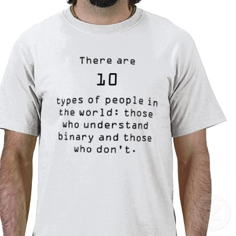

|
Since computer memory can only store binary numbers, one could wonder how a computer can store non-numerical information - like letters, pictures, sounds, etc...
At the heart of the representation system used by the computer is the binary number system used by the computer to represent values using binary numbers
We will now study the following question:
|
I.e., we will study the binary number system
(Some of you may have studied this topic in high school before)
|
Two number systems are in common use:
|
The values that we need to represent in the decimal (= 10) number system are:
( ) (•) (••) (•••) (••••) (•••••) (••••••) (•••••••) (••••••••) (•••••••••) |
The values are represented by the number of dots between the brackets ( ) !!!
( ) (•) (••) (•••) (••••) (•••••) (••••••) (•••••••) (••••••••) (•••••••••) 0 1 2 3 4 5 6 7 8 9 |
All of you have learned to recognized these 10 symbols and associate the assigned value when you were kids (in elementary schools !!!)
(That's not the case for someone that is borned and raised inside - e.g., the Amazon jungle !!!)
In elementary school, you have learned that:
|
Example:
2 represents the quantity (••)
3 represents the quantity (•••)
|
Note:
|
|
Example:
0
1
100
10101
|
Just like the decimal number system:
|
Example:
1 represents the quantity (•)
1 represents the quantity (•)
|
|
|
|
Examples of binary numbers:
0 = 00 = 000 = 0000 Note: leading 0's can be omitted
1 = 01 = 001 = 0001
10
11
100
10101
....
|
Examples of numbers in the decimal number system:
4 = 04 = 004 = 0004 Note: leading 0's can be omitted
9 = 09 = 009 = 0009
10
11
100
10101
....
|
|
to find the (decimal) value that is represented by a binary number:
Given a binary number: dndn-1...d1d0 where di are the digits in the binary number
The decimal value represented by the binary number is:
dn×2n + dn-1×2n-1 ... + d1×21 + d0×20
|
Example:
Binary number: 10101
After numbering the digits and its position: d4d3d2d1d0
1 0 1 0 1
We can use the formula to find the decimal valure represented by 10101:
d4×24 + d3×23 + d2×22 + d1×21 + d0×20
Using d4=1, d3=0, d2=1, d1=0, d0=1, we get:
1×24 + 0×23 + 1×22 + 0×21 + 1×20 = 1×16 + 0×8 + 1×4 + 0×2 + 1×1
= 21 (decimal)
|
Representation in the Representation in the
Value Decimal number system Binary number system
-----------------------------------------------------------------
Zero 0 0
One 1 1
Two 2 10
Three 3 11
Four 4 100
Five 5 101
Six 6 110
Seven 7 111
Eight 8 1000
Nine 9 1001
Ten 10 1010
Eleven 11 1011
Twelve 12 1100
Thirteen 13 1101
Fourteen 14 1110
Fifteen 15 1111
|
Do you get what this T-shirt is saying:
|  |
It actually says:
|
|
• 10(10) = 10 in the decimal number system • 10(2) = 10 in the binary number system |